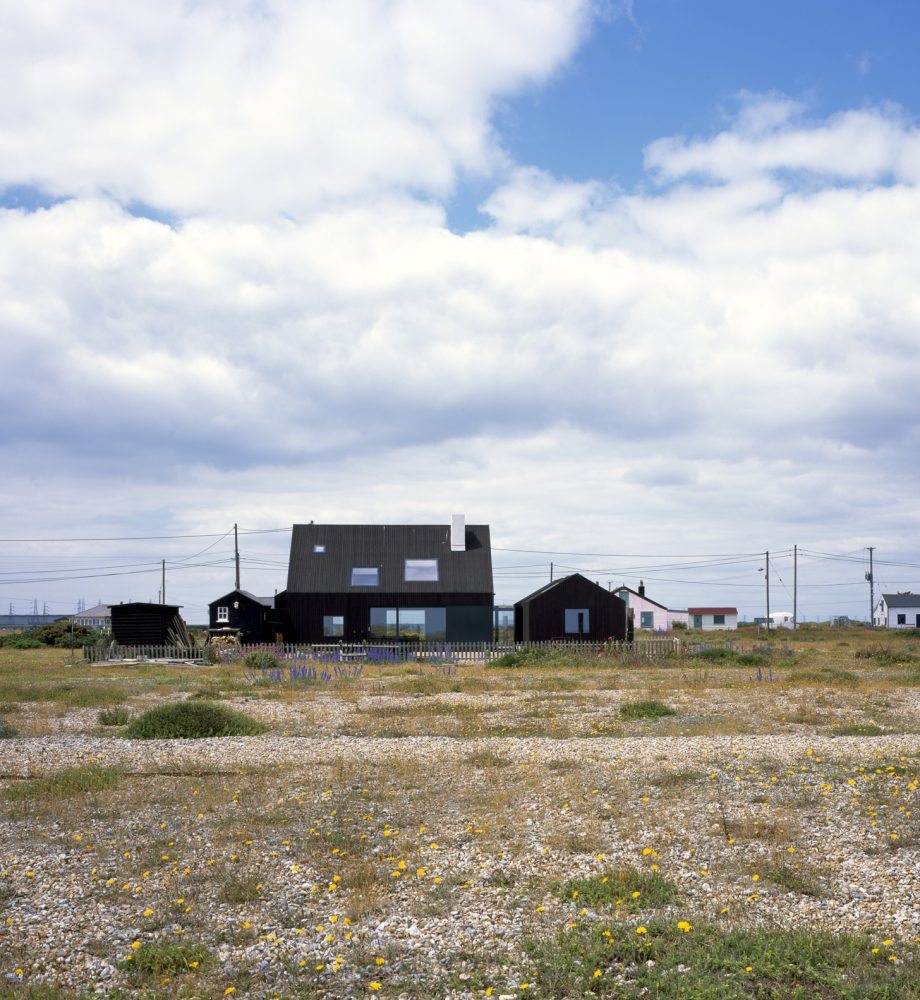
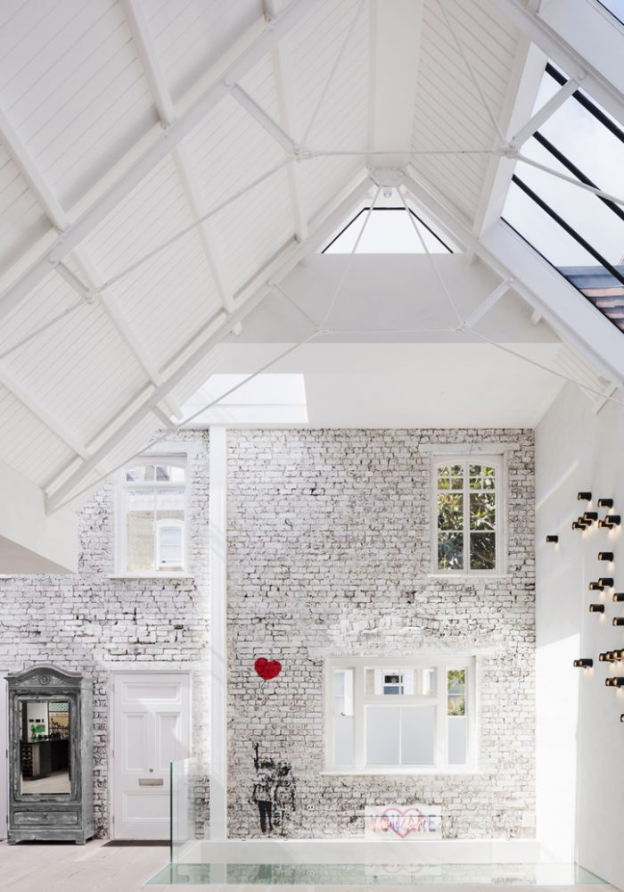
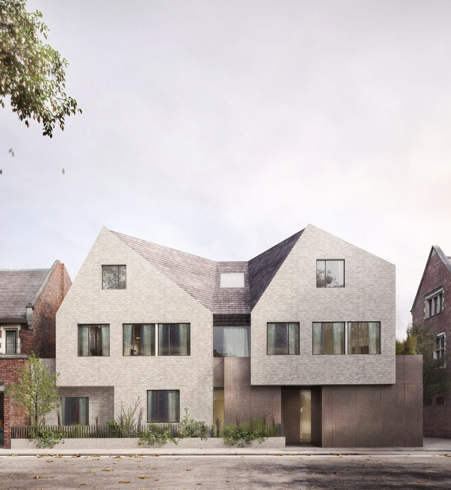
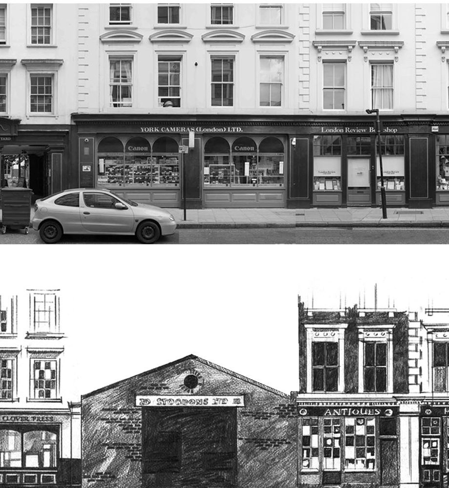

North Vat, Dungeness

Former Artist’s Studio #2, Chelsea
 Market Square, Reading
Market Square, Reading

Five Apartments, Kensington
Conservation Areas: Celebrating 50 years
Conservation Areas were established 50 years ago in 1967 by the Civic Amenities Act and the Bloomsbury Conservation Area Advisory Committee (BCAAC), held an event to celebrate their important contribution to the preservation and enhancement of our built environment. Hosted by Hugh Cullum Architects, the Conservation Advisory Committee was addressed by Frank Dobson, the long-serving MP for Holborn and St Pancras (1979 to 2015). Frank Dobson has lived in Bloomsbury for many years and has supported BCAAC throughout by actively championing the cause of conservation in the local area. The Bloomsbury Conservation Area is large: approximately 160 hectares and is bounded by Euston Road to the north and High Holborn and Lincoln's Inn Fields to the south and from Tottenham Court Road in the west to King's Cross Road in the east. The Bloomsbury Conservation Area was one of the first to be designated after Conservation Areas were established in 1967.…
>

The Artist’s Sketchbook by Albany Wiseman